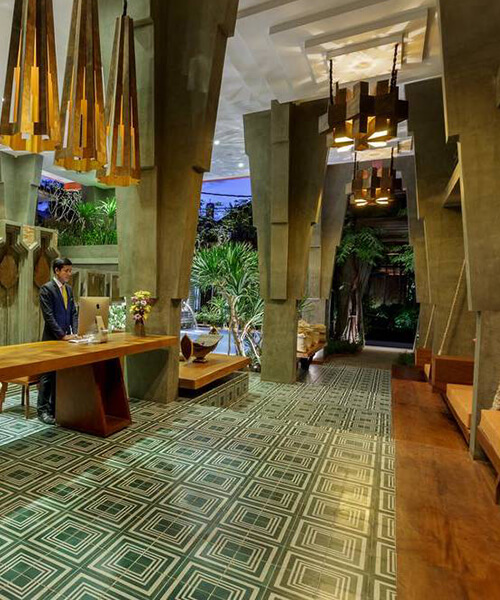
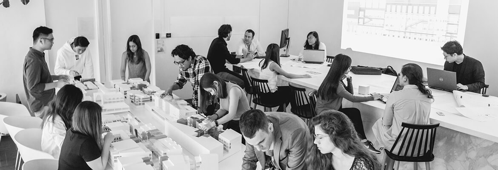

TEAM WORK
WELCOME TO ARCHSITE
he firm was established in 1991 by Richard Ho upon his return to Singapore after working for several years in Austria and Italy – the last two years being in Milan with Aldo Rossi, a world renowned Architect and Pritzker Prize Recipient 1990.
In the President’s Design Awards 2013, Richard has been awarded the Designer of the Year 2013 – the highest award conferred by the State to a design professional.
His work abroad has been awarded prizes in a number of architectural competitions. He has been awarded a GOLD MEDAL in the ARCASIA (Architects Regional Council of Asia) Architecture Awards 1999 – 2000. The ARCASIA Architecture Award is an Asian-wide award held biennially to acknowledge exemplary architectural works in Asia. Richard is the first Singaporean Architect to be accorded this honour.
His practice has also been awarded the Singapore institute of Architects Design Award in 2006 for a monastery building – the highest accolade for excellence in architectural design in Singapore. He has already received the SIA Design Award twice before, in 1995 and again in 2001. In the year 2000, Richard has been awarded a Honourable Mention in the Kenneth F. Brown Asia Pacific Culture and Architecture Design Award, an international architectural award program, which sought works of architecture that created a quality environment for the people and contributed in a holistic way to their well being. Besides practicing architecture, Richard is also appointed as Adjunct Assoc. Prof with the National University of Singapore and teaches Architecture and Urban Design in the Master of Architecture course. Richard is one of seventy visual artists, film directors and architects invited to exhibit his works at the “Cities on the Move” exhibition at the Secession Museum in Vienna in November 1996. This exhibition was subsequently staged in Bordeaux, France; new York, USA; Copenhagen, Denmark; London, UK; and Helsinki, Finland.